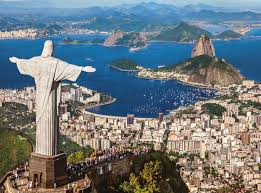

Brazil is the largest country of South America. With it's beatiful different econological regions, ranging from the Amazon to paradisiac beaches, it is one of the top tourist attractions.

Brazil is the largest country of South America. With it's beatiful different econological regions, ranging from the Amazon to paradisiac beaches, it is one of the top tourist attractions.
The flag says "Order and Progress".
Brazil was officially "discovered" in 1500, when a fleet commanded by Portuguese diplomat Pedro Álvares Cabral, on its way to India, landed in Porto Seguro, between Salvador and Rio de Janeiro. At the end of the 17th century, the news that fabulous veins of emeralds, diamonds, and gold had been found in Minas Gerais exploded in Lisbon. The region began to export 30,000 pounds of gold a year to Portugal. Bandeirantes and other fortune hunters rushed in from all over, and boat loads of carpenters, stonemasons, sculptors, and painters came from Europe to build cities in the Brazilian wilderness. Pedro II's daughter, Princess Isabel, officially ended slavery in 1888. Soon after, disgruntled landowners united with the military to finish with monarchy altogether, forcing the royal family back to Portugal and founding Brazil's first republican government on November 15, 1889.
The country is divided into 5 main regions:
The cultures of the indigenous Indians, Africans, and Portuguese have together formed the modern Brazilian way of life. The Portuguese culture is by far the dominant of these influences; from it Brazilians acquired their language, their main religion, and most of their customs. African influences on the Brazilian way of life are strongest along the coast between the Northeast and Rio de Janeiro; they include traditional foods, religions, and popular music and dance, especially the samba. Brazil is often said to be the country of samba and football, and it would be a difficult task to decide which one is more popular.
I was born in a city called Belo Horizonte, but moved to Rio de Janeiro when I was young. My heart belongs to Rio de Janeiro and I feel completely'Carioca'; a term used to describe a person from Rio de Janeiro who has certain characteristics. Rio de Janeiro is a coastal city in Brazil on the southeast of the country. After Salvador, Rio de Janeiro was the capital of Brazil from 1763 to 1961 (almost 200 years). Brasilia was then created and has been the capital since 1961.
